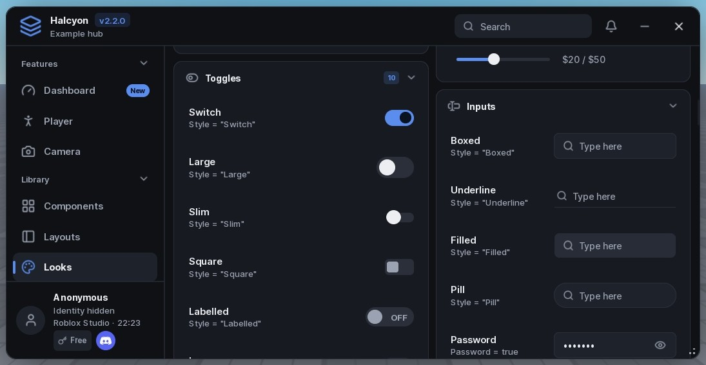
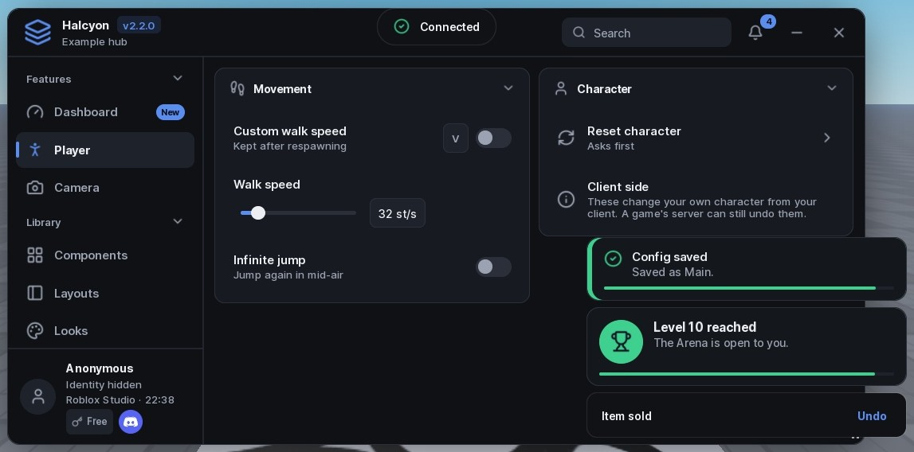
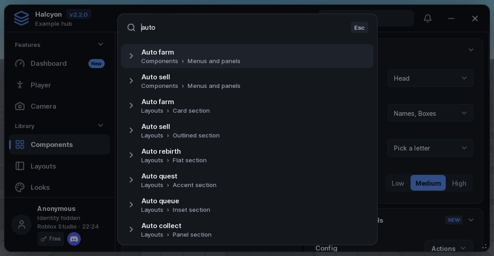
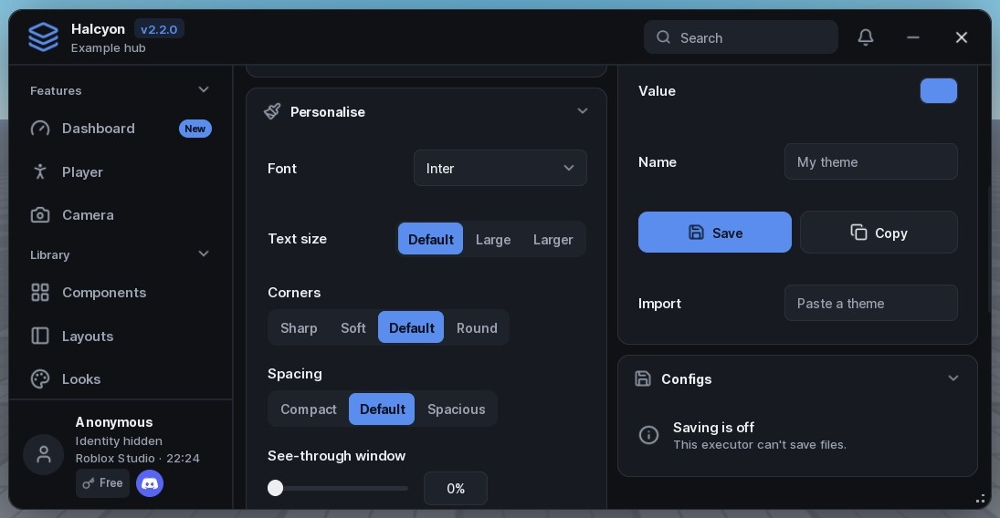
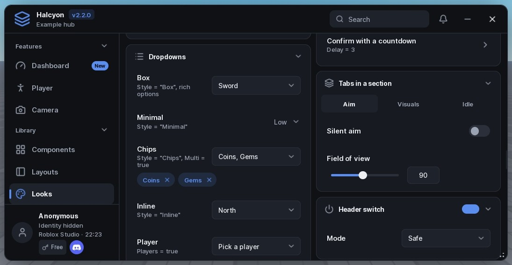
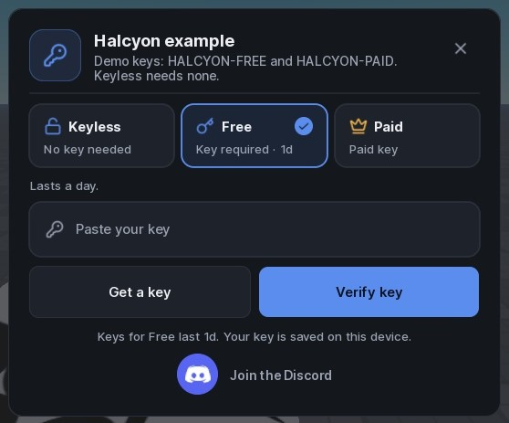
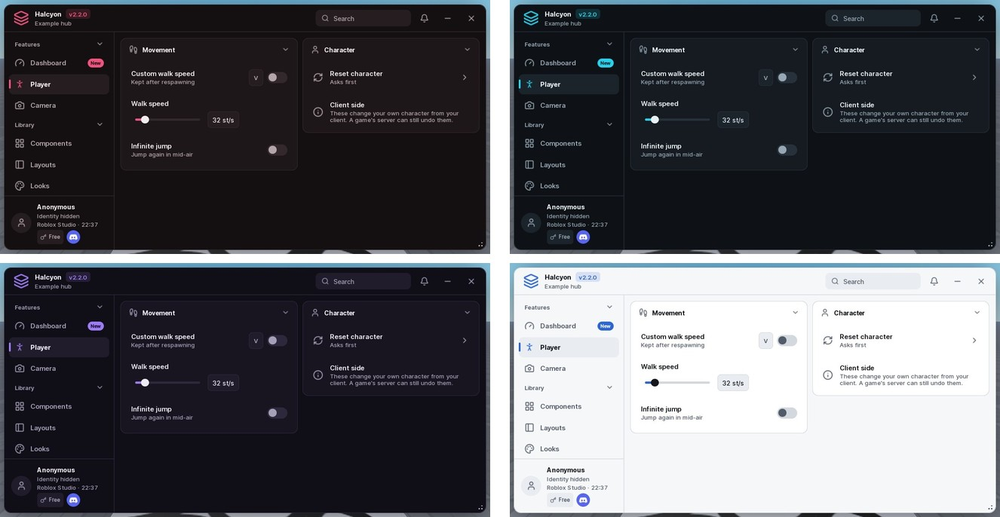
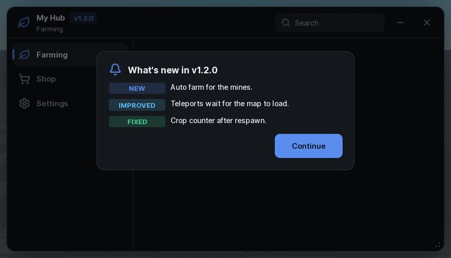
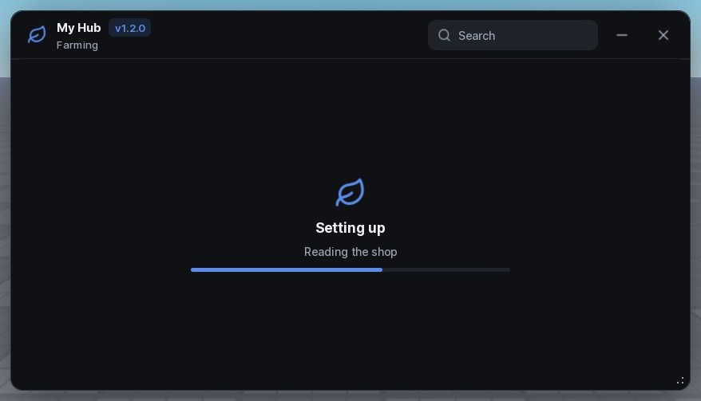
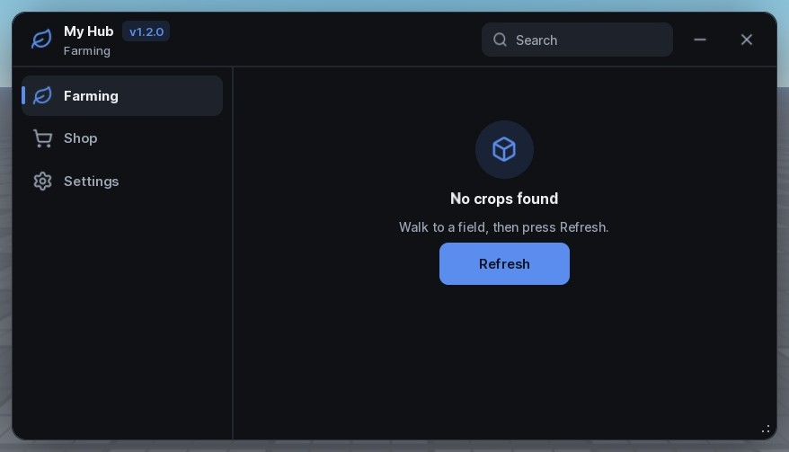

Script hubs that feel finished.
Halcyon is a Luau UI library for Roblox executors. One loadstring gives you a window with 37 controls, a key system with tiers, saved configs and sixteen themes, and it reflows from a 4K monitor down to a phone.
Load it in your executor
local Halcyon = loadstring(game:HttpGet("https://raw.githubusercontent.com/ScriptsForDays/Halcyon/main/dist/Halcyon.luau"))()




A named look for every control.
The defaults already look finished. When a hub wants its own feel, set Style on one element, Styles on the window, or pick one of five presets. Misspell a name and you get the default, not an error.
- Toggle
- 10
- Slider
- 7
- Button
- 8
- Section
- 7
- Notice
- 10
- Theme
- 16

Keys, tiers and paid features, built in.
Keyless, Free and Paid tiers, or your own. Keys from a list, your validator or your server. Rows, sections and whole tabs lock to a tier and say why, so players see what they're missing instead of a blank space.
- Ad-service confirmation for free keys, wired to the service's own API.
- Saved keys with expiry, shown on the prompt and the profile card.
- A Discord button on the prompt and the profile, each optional.

Players make it theirs.
Sixteen themes with readable text on every surface, a theme builder players can save and share from, and live settings for font, text size, corners and spacing. Their choices are saved on the device.

The parts you'd otherwise build by hand.
A loading screen that moves only when your hub reports progress, a what's-new card shown once per version, an update log, empty states and a lock screen for maintenance.

Window:Changelog shows once per version.
Window:Loading reports real setup steps.
Tab:EmptyState for content that isn't ready.Written for assistants, too.
LLM.txt describes every component the same way: what it's for, when not to use it, its options and its mistakes. The layout guide teaches an assistant to choose controls and leave things out, so vibe-coded hubs stay tidy.
local Window = Halcyon:CreateWindow({ Title = "My Hub", Folder = "MyHub" })
local Player = Window:Tab({ Title = "Player", Icon = "user" })
local Movement = Player:Section({ Title = "Movement" })
Movement:Toggle({ Title = "Fly", Flag = "Fly", Callback = function(on) end })
Movement:Slider({ Title = "Walk speed", Min = 16, Max = 120, Default = 32 })
Window:SettingsTab()
Window:LoadAutoload()One loadstring. Then build.